A study series for nurses entering kidney care
This series is written for Philippine-licensed registered nurses who are starting work in a nephrology ward, a chronic kidney disease (CKD) clinic, or a hemodialysis (HD) unit, and for the educators and preceptors who train them. It has sixteen core modules, which run from kidney assessment and glomerular disease through acute kidney injury (AKI), hemodialysis, living well on dialysis, peritoneal dialysis (PD), transplantation, palliative care, and patient teaching to quality improvement, and an advanced Module 13 on continuous kidney replacement in the intensive care unit and hemodiafiltration, studied after the capstone. Each one explains the reasoning first and the task second: what the kidney or the machine is doing, what the evidence supports, and what that means for the nurse at the bedside or chairside.
Every module has the same parts: learning objectives; an original lesson that moves from a plain mental model to physiology, evidence, and practice; a fictional nursing case organized around what to assess, communicate, teach, and escalate; a self-assessment that draws questions at random from a fifteen-question bank, with a rationale for every option; a supervised-practice prompt for use with a preceptor; and assigned reading from this site’s guides and calculators. The series is free, needs no account, and sends nothing you answer to any server.
What this series is, and is not
It is self-study. It is not a certificate of training in renal dialysis nursing under the Department of Health (DOH) licensing rules, it carries no Continuing Professional Development (CPD) units, and a self-assessment score does not attest to clinical competence. Competence is shown in supervised practice and signed off by a clinical preceptor or training provider.1,2
Who can hold this role
Hemodialysis Nurse: qualifications at a glance
- PRC-licensed nurse (R.A. 9173). DOH, PSN
- Certificate of training in nursing care of renal dialysis patients; PSN cites a structured program of 3 months or more where needed. DOH, PSN
- Current BLS (DOH); PSN asks for current BLS and ACLS from a DOH-accredited provider. At least one nurse per shift with updated ACLS. DOH, PSN
- Ratio: no more than 1 nurse to 4 stations per shift; PSN allows 1:6 when a nursing assistant is present. DOH, PSN
Sources: DOH Administrative Order No. 2012-0001, Sec. V.B.2.a; Philippine Society of Nephrology (2024), Guidelines for nephrologists in the operation of hemodialysis clinics, Sec. III.A; Republic Act No. 10862. A summary for orientation, not legal advice: check the current issuances, and your unit’s license and PhilHealth accreditation. The full table for every role is on the Academy home.
Choose the path that matches your work
Both paths use the same sixteen core modules and end with the same advanced module. They differ in order and in which modules deserve the most time. Select a path to reorder the module list below.
Nephrology Nursing path: modules in numerical order, with most time on assessment, CKD, acute kidney injury, treatment choices, peritoneal dialysis, and transplantation.
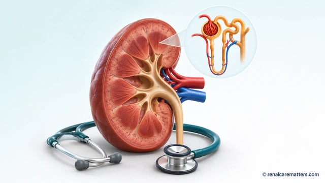
Step 1Module 1Emphasized on this pathEmphasized on this path Kidney Function and Renal Assessment What the kidneys do every minute, what fails first when they are injured, and how a focused bedside assessment turns weight, blood pressure, breathing, and two laboratory tests into a nursing judgment.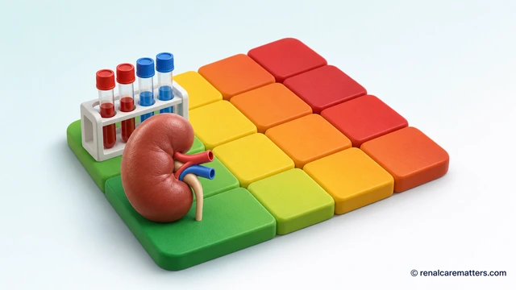
Step 2Module 2Emphasized on this pathFoundation Chronic Kidney Disease Identification, Staging, and Progression How chronic kidney disease is confirmed, staged, and tracked, why chronicity takes three months to prove, and where nursing review of medicines changes the course of the disease.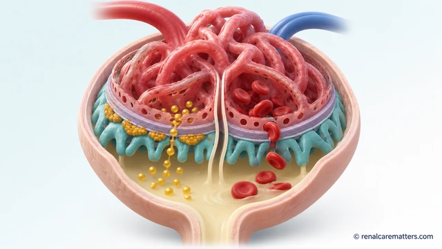
Step 3Module 15Emphasized on this pathEmphasized on this path Glomerular and Systemic Kidney Diseases How the glomerulus can leak protein or bleed and inflame, why each pattern brings its own complications, and the nursing that keeps these patients safe: daily weights, blood pressure, urine testing, watching for clots and infection, kidney biopsy care, and the safe use of steroids and immunosuppressive medicines. Step 4Module 3Emphasized on this pathFoundation Chronic Kidney Disease Complications, Nutrition, and Medicines Anemia, mineral and bone disorder, potassium, acid, fluid, and nutrition in chronic kidney disease: what causes each, which results to watch, and what the nurse teaches.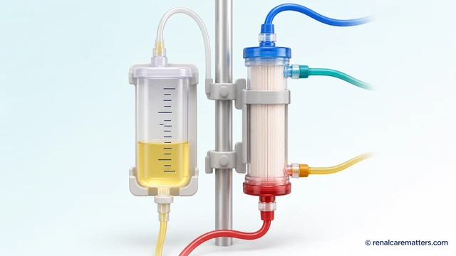
Step 5Module 4Emphasized on this pathFoundation Acute Kidney Injury and Acute Kidney Support How acute kidney injury is recognized hours before it becomes obvious, how to sort its causes at the bedside, when to escalate without waiting, and how intermittent, prolonged, and continuous kidney support differ. Step 6Module 5Emphasized on this pathFoundation Kidney Failure, Treatment Choices, and Conservative Care The four pathways for a person approaching kidney failure, how nurses support a decision that belongs to the patient, and how cost, distance, and family shape what is realistic in the Philippines.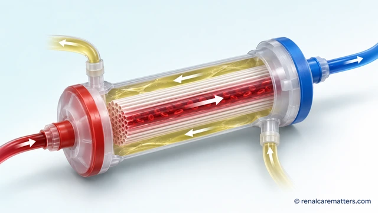
Step 7Module 6FoundationEmphasized on this path Hemodialysis Principles, Prescription, and Adequacy How hemodialysis moves solutes and water, how to read and verify a prescription line by line, how fluid removal is calculated, and what Kt/V and the urea reduction ratio do and do not tell you.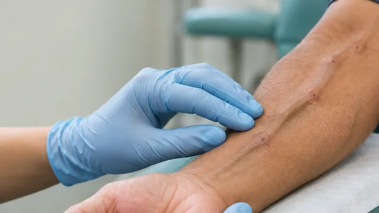
Step 8Module 7FoundationEmphasized on this path Hemodialysis Vascular Access and Infection Prevention The access is the patient’s lifeline. How fistulas, grafts, and catheters differ, how to examine one in thirty seconds, when not to cannulate, and the infection-prevention habits that protect every patient in the unit. Step 9Module 8FoundationEmphasized on this path Hemodialysis Equipment, Water, and Dialysate Safety A patient meets more than 100 liters of water in a single session. How that water is made safe, what the machine checks and what it cannot check, and why the nurse’s signature on the log is a clinical act.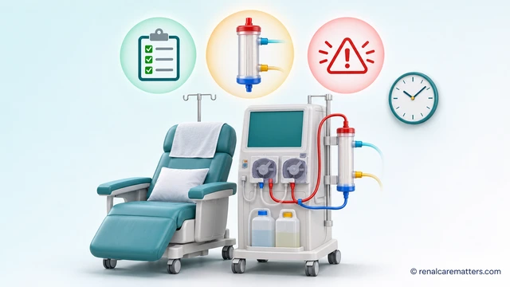
Step 10Module 9FoundationEmphasized on this path The Complete Hemodialysis Session and Complication Response One treatment from arrival to departure: what to assess before, during, and after, how to recognize the complications that kill within minutes, and what to do first while help is on the way.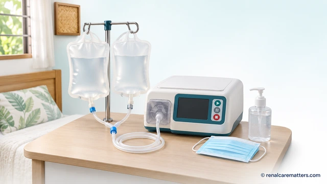
Step 11Module 10Emphasized on this pathFoundation Peritoneal Dialysis and Home Dialysis Nursing Dialysis that the patient performs at home, using the lining of the abdomen as the filter. How exchanges work, how infection enters, what cloudy fluid means, and how a nurse judges that a patient or caregiver is ready.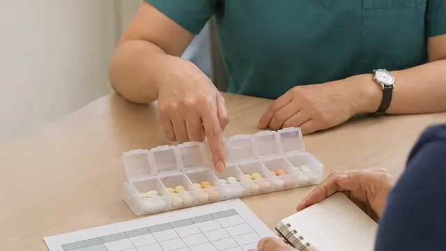
Step 12Module 11Emphasized on this pathFoundation Transplantation and Special Populations Who should be referred for a kidney transplant and when, what to watch in the first days and the following years, why a missed dose matters, and how dialysis care changes for children, pregnancy, and frail or complex patients. Step 13Module 14Emphasized on this pathEmphasized on this path Living Well on Hemodialysis: Mind, Behavior, and Longevity Why mood, memory, sleep, and behavior change on hemodialysis, what the evidence shows about depression and its treatment, and what the nurse at the chair can notice, ask, screen, report, and do to help patients and families live well, and live longer. Step 14Module 16Emphasized on this pathEmphasized on this path Supportive, Palliative, and End-of-Life Kidney Care Supportive care runs alongside every kidney treatment, not only at the end of life: why symptoms are so common in kidney failure, how to assess and relieve them, how to plan ahead with patients and families, what happens when dialysis stops, and how nurses care for the dying, the bereaved, and themselves. Step 15Module 17Emphasized on this pathEmphasized on this path Patient Teaching, Health Literacy, and Evidence-Based Practice How people learn when they are ill, tired, and anxious; how to teach so that the lesson survives the trip home; how to spot and respect limited health literacy; and how a nurse reads a study and turns a unit question into evidence-based practice. Step 16Module 12Emphasized on this pathEmphasized on this path Philippine Practice, Quality Improvement, and Capstone The rules a Philippine dialysis nurse works under, how a unit measures and improves its own care, what to do with an error that was caught in time, and how to keep patients safe when power, water, or roads fail. The series ends with a capstone project. Step 17Module 13AdvancedAdvanced Convective Therapies: Continuous Renal Replacement Therapy and Hemodiafiltration The physiology shared by continuous kidney replacement in the intensive care unit and hemodiafiltration in the dialysis unit, and the nursing that keeps each one safe: modes, prescription, anticoagulation, fluid balance, circuits, complications, and quality.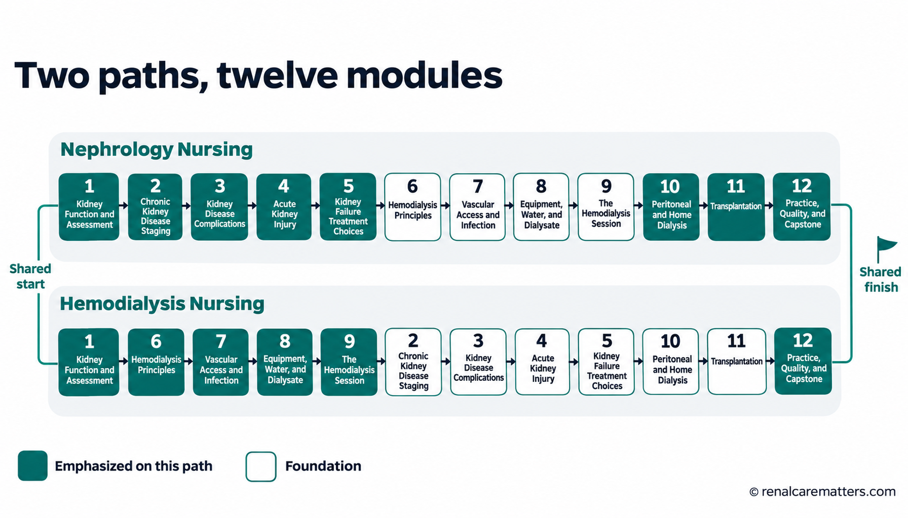
Go deeper after the core
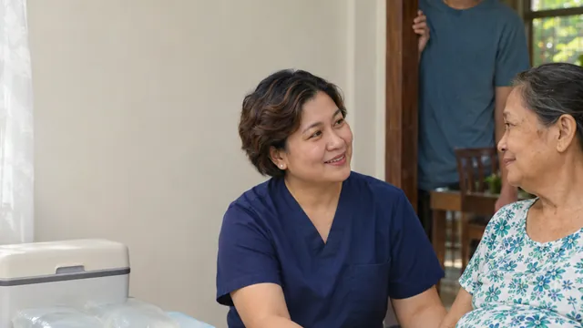
Specialty12 modules · about 60 hours Peritoneal Dialysis Nurse Peritoneal dialysis program nursing, from physiology and home readiness to the catheter and exit site, CAPD and APD, goal-directed monitoring, peritonitis, urgent problems, teaching, transitions and quality, with five skills stations. Entry lesson: Module 10. SpecialtyBy Role · 14 modules · about 111 hours Special Dialysis Nurse Roles For the nurse handed a portfolio: vascular access, infection prevention, educator and preceptor, patient education, quality, safety and emergencies, care coordination, anemia, transplant liaison, records and PhilHealth, water and equipment, and adequacy, with worked scenarios and a capstone. By RoleSupervised support · 12 modules · 120 hours Dialysis Nurse Assistant / PCA For the supervised assistant who works on your delegation: role and delegation, observations and weights with tare, access protection, emergencies, safe departure, cleaning, records and specimens, with an assistant toolkit. Not an RN specialty and not a technician equivalency. Specialty12 modules · about 30 hours Transplant Nurse Kidney transplant ward and clinic nursing, from referral and compatibility to immunosuppression, rejection and infection surveillance, PhilHealth benefits and a simulation capstone. Entry lesson: Module 11.How competence builds from module to module
Twelve competency threads run through the course. Each cell shows the highest level a module aims for in that thread; the last column is the level reached by the end of the course. Read across a row to see a skill grow, for example from explaining fluid assessment in Module 1 to completing full treatment assessments on your own, after sign-off, in Module 9. Each module page lists its competencies in full, and the educator checklist records them.
- Knows Explains the reasoning and applies it to cases. Verified by the self-assessment and the nursing case.
- Shows how Demonstrates the skill in simulation, a skills station, or teach-back. Verified by an educator.
- Does, supervised Performs the task with real patients under direct supervision. Verified by preceptor observation.
- Does, independent Performs the task without direct supervision after preceptor sign-off under the unit’s policy.
| Thread | 1 | 2 | 15 | 3 | 4 | 5 | 6 | 7 | 8 | 9 | 10 | 11 | 14 | 16 | 17 | 12 | 13 | By the end |
|---|---|---|---|---|---|---|---|---|---|---|---|---|---|---|---|---|---|---|
| Clinical assessment and fluid status | D | D | D | I | K | K | I | I | D | D | D | D | Does, independent | |||||
| Interpreting results and trends | K | D | S | D | K | D | D | D | K | K | Does, supervised | |||||||
| Medicines and their safety | D | D | D | D | D | K | D | D | D | D | Does, supervised | |||||||
| Patient and family teaching, nutrition, and shared decisions | S | S | S | D | K | D | S | S | S | D | D | D | S | D | S | K | Does, supervised | |
| Delivering kidney replacement therapy | D | K | D | I | I | D | D | D | D | D | Does, independent | |||||||
| Vascular and peritoneal access | K | D | D | Does, supervised | ||||||||||||||
| Infection prevention and control | K | D | D | K | S | Does, supervised | ||||||||||||
| Water, dialysate, and equipment safety | D | K | Does, supervised | |||||||||||||||
| Recognizing deterioration and emergency response | S | D | S | S | D | D | D | S | S | D | Does, supervised | |||||||
| Communication, handoff, and documentation | D | D | S | D | D | S | D | D | D | I | D | Does, independent | ||||||
| Professional, ethical, and legal practice | S | S | D | S | K | D | Does, supervised | |||||||||||
| Quality, safety culture, and improvement | K | D | K | K | D | Does, supervised |
Milestones
- Module 1 · After this module, the nurse can perform a focused renal assessment in priority order, starting with breathing, and turn weight, blood pressure, and the two core kidney tests into a stated judgment and action.
- Module 2 · After this module, the nurse can confirm chronicity, stage chronic kidney disease by cause, glomerular filtration rate (GFR) category, and albuminuria category, and complete a kidney-focused medication reconciliation that catches hidden nonsteroidal anti-inflammatory drug (NSAID) use.
- Module 15 · After this module, the nurse can monitor a patient with glomerular or systemic kidney disease under supervision: standardized weights, edema, blood pressure, and urine testing; recognizing clots, infection, and rapid loss of kidney function; caring for a patient before and after kidney biopsy; and supporting safe immunosuppressive treatment.
- Module 3 · After this module, the nurse can track anemia, mineral, potassium, and nutrition results together, correct product-specific medicine timing with teach-back, and refer unintentional weight loss to the dietitian.
- Module 4 · After this module, the nurse can recognize acute kidney injury against the Kidney Disease: Improving Global Outcomes (KDIGO) criteria, rule out a blocked catheter first, and escalate hyperkalemia with electrocardiogram (ECG) changes through an immediate Situation, Background, Assessment, Recommendation (SBAR) call.
- Module 5 · After this module, the nurse can guide a patient and family through all four kidney failure pathways without steering, confirm understanding with teach-back, and document what the patient values.
- Module 6 · After this module, the nurse can verify a hemodialysis prescription against the order, calculate a safe fluid-removal rate, and call the physician before starting when the rate is unsafe.
- Module 7 · After this module, the nurse can examine an access by looking, listening, and feeling, decide whether it can be used, and cannulate or connect it with aseptic technique.
- Module 8 · After this module, the nurse can confirm that water, dialysate, and machine safety checks have passed before any patient is connected, and hold treatment when a check has failed or is missing.
- Module 9 · After this module, the nurse can monitor a full hemodialysis session from pre-treatment assessment to handoff, and take the correct first actions in an intradialytic emergency while help is coming.
- Module 10 · After this module, the nurse can judge whether a PD patient or caregiver is safe to go home, by observing a full return demonstration and responding urgently to contamination and cloudy effluent.
- Module 11 · After this module, the nurse can recognize and urgently report early graft trouble in a new kidney transplant recipient and teach immunosuppressant routines, including missed doses, by teach-back.
- Module 14 · After this module, the nurse can notice, ask about, screen per policy, document, and report changes in mood, thinking, and sleep in a patient on HD under supervision, and can respond to a patient at risk of suicide by asking directly, staying, and escalating through the facility's crisis pathway.
- Module 16 · After this module, the nurse can deliver supportive care alongside any kidney treatment under supervision: assessing and reporting symptoms with a validated tool, providing comfort measures safely, supporting advance care planning and requests to stop dialysis within the team, and caring for dying patients, their families, and colleagues.
- Module 17 · After this module, the nurse can plan, deliver, check with teach-back, and document a short, plain-language teaching episode at the dialysis chair, and can turn a clinical question into a PICO (population, intervention, comparison, outcome) question and appraise the evidence that answers it.
- Module 12 · After this module, the nurse can measure and improve a unit process, report and learn from near misses, and present a capstone audit or case with a measurable follow-up.
- Module 13 · After this module, the nurse can assist safely with continuous renal replacement therapy (CRRT) or hemodiafiltration (HDF) under supervision: verifying fluids against the order, reconciling hourly fluid balance, answering alarms, and recording the delivered dose.
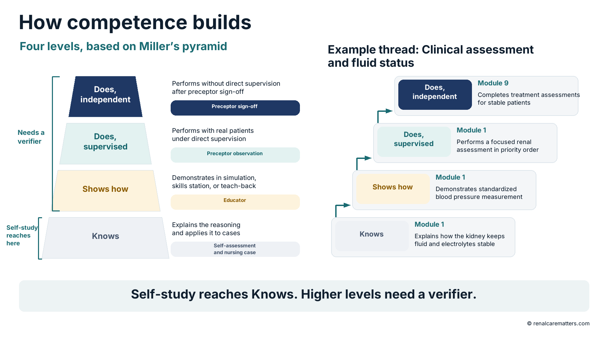
The modules at a glance
Study time is an estimate for reading the lesson, working the case, and completing the self-assessment. It does not include supervised practice.
| No. | Module | Nursing case | Self-study time | Nephrology path | Hemodialysis path |
|---|---|---|---|---|---|
| 1 | Kidney Function and Renal Assessment | Rapid weight gain and orthopnea | About 24 min | Emphasized | Emphasized |
| 2 | Chronic Kidney Disease Identification, Staging, and Progression | One low result, then a pattern | About 23 min | Emphasized | Foundation |
| 15 | Glomerular and Systemic Kidney Diseases | A swollen calf on day six | About 54 min | Emphasized | Emphasized |
| 3 | Chronic Kidney Disease Complications, Nutrition, and Medicines | Tired, itchy, and losing weight | About 34 min | Emphasized | Foundation |
| 4 | Acute Kidney Injury and Acute Kidney Support | A catheter, a creatinine, and a potassium | About 24 min | Emphasized | Foundation |
| 5 | Kidney Failure, Treatment Choices, and Conservative Care | Three hours from the nearest center | About 24 min | Emphasized | Foundation |
| 6 | Hemodialysis Principles, Prescription, and Adequacy | The number on the order and the patient in the chair | About 37 min | Foundation | Emphasized |
| 7 | Hemodialysis Vascular Access and Infection Prevention | No thrill this morning | About 52 min | Foundation | Emphasized |
| 8 | Hemodialysis Equipment, Water, and Dialysate Safety | A blank line in the log | About 38 min | Foundation | Emphasized |
| 9 | The Complete Hemodialysis Session and Complication Response | Ninety minutes in | About 72 min | Foundation | Emphasized |
| 10 | Peritoneal Dialysis and Home Dialysis Nursing | Ready to go home? | About 54 min | Emphasized | Foundation |
| 11 | Transplantation and Special Populations | Day two, and a year later | About 54 min | Emphasized | Foundation |
| 14 | Living Well on Hemodialysis: Mind, Behavior, and Longevity | Shortened sessions and short temper | About 66 min | Emphasized | Emphasized |
| 16 | Supportive, Palliative, and End-of-Life Kidney Care | “Ayoko na” at the chair | About 47 min | Emphasized | Emphasized |
| 17 | Patient Teaching, Health Literacy, and Evidence-Based Practice | “Opo, naiintindihan ko” | About 48 min | Emphasized | Emphasized |
| 12 | Philippine Practice, Quality Improvement, and Capstone | A near miss and a brownout | About 63 min | Emphasized | Emphasized |
| 13 | Convective Therapies: Continuous Renal Replacement Therapy and Hemodiafiltration | Tingling lips at two in the morning | About 80 min | Foundation | Foundation |
How self-assessment and sign-off differ
The questions at the end of each module are formative. They are case-based, have one best answer, and explain why each of the other options is weaker, because understanding why a tempting answer is wrong is most of the learning. You can retry as often as you like. If you tick the box on a module page, your result is remembered in that browser only, so you can see where you left off; untick it and it is erased.
Skills are a different matter. Cannulating a fistula, connecting a catheter, testing water, or responding to a collapse cannot be learned or judged from a screen. Each module therefore ends with prompts for supervised practice, and the educator page gathers them into a printable checklist that a preceptor completes on the unit’s own equipment and procedures.
What the series is built on
The scope follows Philippine practice expectations and internationally recognized nephrology nursing curricula. Philippine sources define what is required locally: the Philippine Nursing Act, the DOH licensing order for dialysis facilities, and the Philippine Society of Nephrology (PSN) 2024 guidelines, which describe a structured nurse training program of three months or more.3,1,2 International curricula were used to check that nothing important was left out: the American Nephrology Nurses Association (ANNA) core curriculum, the post-basic curriculum of the European Dialysis and Transplant Nurses Association/European Renal Care Association (EDTNA/ERCA), and the examination domains of the Nephrology Nursing Certification Commission (NNCC).4 Clinical statements are supported by current guidelines, chiefly Kidney Disease: Improving Global Outcomes (KDIGO), the Kidney Disease Outcomes Quality Initiative (KDOQI), and the International Society for Peritoneal Dialysis (ISPD), and each module lists its own references.5,6,7,8,9,10
| Module | Philippine source or expectation | ANNA core curriculum area | EDTNA/ERCA area | NNCC domain |
|---|---|---|---|---|
| 1. Renal assessment | PSN 2024 nurse training topics: renal physiology, laboratory interpretation | Foundations: anatomy and physiology; assessment of kidney function | Renal anatomy and physiology; patient assessment | Concepts of kidney disease |
| 2. CKD staging | PSN 2024 nurse training topics: renal physiology, laboratory interpretation | Chronic kidney disease: identification, staging, slowing progression | Chronic kidney disease: assessment and prevention of progression | Concepts of kidney disease |
| 15. Glomerular and systemic disease | Kidney diseases that lead to CKD and their care in Philippine hospitals and dialysis units: glomerular disease, lupus, diabetes, and inherited cystic disease; ward monitoring and medicine safety per hospital protocol | Glomerular and systemic diseases affecting the kidney; nursing care during immunosuppressive treatment and kidney biopsy | Causes of kidney disease, including glomerulonephritis, systemic disease, and inherited disease; nursing assessment and patient education | Disease processes leading to kidney failure; pharmacology of immunosuppressive agents; patient education |
| 3. CKD complications | PSN 2024 nurse training topics: laboratory interpretation, nutrition, behavioral management | CKD complications; nutrition; pharmacology in kidney disease | Complications of CKD; nutrition; medication management | Concepts of kidney disease |
| 4. AKI | PSN 2024 nurse training topics: indications for hemodialysis, complications | Acute kidney injury; acute care kidney replacement therapies | Acute kidney injury and acute renal replacement therapy | Transplant and acute therapies; concepts of kidney disease |
| 5. Treatment choices | PSN 2024: patient education; DOH Administrative Order (AO) 2012-0001: continuing patient education and transplant linkage | Treatment options education; palliative and supportive care | Renal replacement therapy options; conservative management | Concepts of kidney disease; transplant |
| 6. HD prescription | PSN 2024 nurse training topics: hemodialysis indications, prescription | Hemodialysis: principles, prescription, adequacy, fluid management | Principles of hemodialysis; dialysis adequacy | Hemodialysis |
| 7. Vascular access | PSN 2024 nurse training topics: vascular access care; DOH AO 2012-0001 infection control requirements | Vascular access; infection prevention and control | Vascular access management; infection control | Hemodialysis |
| 8. Water and dialysate | DOH AO 2012-0001 and AO 2013-0003 water requirements; PSN 2024 water testing schedule | Hemodialysis: water treatment, dialysate, equipment | Dialysis technology: water treatment and machine safety | Hemodialysis |
| 9. HD session | PSN 2024 nurse training topics: hemodialysis complications; DOH AO 2012-0001 Basic Life Support (BLS) and Advanced Cardiovascular Life Support (ACLS) requirements | Hemodialysis: patient monitoring, complications, emergencies | Hemodialysis complications and emergency management | Hemodialysis |
| 10. PD and home dialysis | DOH AO 2012-0001 (advocacy of PD standards); Philippine Health Insurance Corporation (PhilHealth) PD benefit context | Peritoneal dialysis; home therapies | Peritoneal dialysis; patient and caregiver education | Peritoneal dialysis |
| 11. Transplant | DOH AO 2012-0001: linkage with accredited kidney transplant centers | Kidney transplantation; care across the life span (pediatric, pregnancy, older adults) | Renal transplantation; special patient groups | Transplant and acute therapies; concepts of kidney disease |
| 14. Living well on HD | Psychological adaptation, mental health, and long-term wellbeing of HD patients in Philippine units; PSN 2024 standards for patient education and support; RA 10173 (confidentiality) | Psychosocial aspects of kidney disease; care of the patient with cognitive impairment; patient and family education | Psychosocial care and quality of life; patient and family support | Psychosocial care of the patient with kidney disease; hemodialysis |
| 16. Palliative and end-of-life care | Philippine dialysis nurse training topics: patient and family support, ethics, and care of the dying; hospital palliative care and end-of-life policies | Supportive and palliative kidney care; symptom management; ethics and advance care planning | Psychosocial and supportive care; conservative management; care at the end of life | Professional practice: ethics and end-of-life care; patient and family education and support |
| 17. Teaching and evidence | Philippine dialysis nurse training: health teaching of patients and families, and nursing research and evidence-based practice within the nurse's legal scope | Patient and family education; health literacy; evidence-based practice and research in nephrology nursing | Patient education and empowerment in kidney care; research and evidence-based practice | Patient education and self-management; professional practice including evidence-based practice |
| 12. Practice and quality | RA 9173; DOH AO 2012-0001 (staffing, training, transfer arrangements); PSN 2024 (training content, disaster preparedness); RA 10173 | Professional issues; quality assurance and performance improvement; emergency and disaster preparedness | Professional practice; quality and safety | Hemodialysis; concepts of kidney disease (professional practice) |
| 13. Continuous therapy and hemodiafiltration | PSN 2024 nurse training topics: modalities of dialysis, complications; intensive care unit (ICU) kidney support per hospital protocol | Acute care kidney replacement therapies (CRRT); hemodiafiltration and convective therapies | Acute renal replacement therapy; hemodiafiltration | Acute therapies; hemodialysis technologies |
The international columns map topics, not requirements; United States and European credentials do not apply to Philippine licensure. Mapping to NNCC domains uses domain names only, because the published examination weights were being revised during 2026.
Using the series in a training program
A head nurse or training provider can use these modules as the guided-study component of a supervised program. The educator and preceptor page sets out a proposed twelve-week structure, suggested hours, completion criteria, practical stations, an optional final-examination blueprint, and a printable competency checklist. Those are proposals for a provider to adapt and validate; they are not requirements of any regulator.
- Educator and preceptor resourceProposed program structure, practical stations, and the printable competency checklist.
- Dialysis center quality managementHow staff training and competency fit into the unit’s quality program.